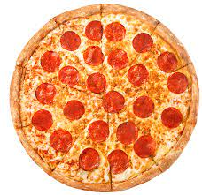

Bakery Style Pizza

Description
A delicious bakery style pizza with a amazingly crispy crust, mouth watering tomato sauce,
and creamy cheese to top it off.
This recipe can be modified in many ways and add you're favorite ingridients
such as pepperoni, mushrooms, olives or sausage bits.
ingredients
-
Dough
- 1 1/4 cups warm water
- 1 teaspoon active dry yeast
- 3 cups bread flour
- 1 1/2 teaspoons fine salt
- 1/4 cup olives divided
-
Sauce
- 1 (28 ounce) can plain crushed tomatoes
- 1 (14 ounce) can pizza sauce
-
Cheese
- 8 ounces low-moisture whole-milk mozzarella, very thinly sliced
- 1/4 cup grated pecorino romano cheese
Steps
-
Combine water and yeast in a small bowl. Let stand until yeast softens and begins to
form a creamy foam, about 5 minutes.
-
Combine flour and salt together in the bowl of a stand mixer fitted with a dough hook attachment.
Pour in yeast mixture. Knead dough until smooth, about 7 minutes.
-
Grease a large bowl lightly with olive oil. Form dough into a tight ball and lightly grease the top.
Place in the bowl; cover loosely with plastic wrap. Let rise until doubled in volume, about 30 minutes.
-
Mix crushed tomatoes and pizza sauce together in a bowl to make sauce.
-
Grease a heavy-gauge rimmed 12x17-inch baking sheet generously with olive oil. Press dough into the bottom.
Prick dough all over with a fork. Arrange mozzarella cheese slices over dough; cover with 1 cup sauce.
Sprinkle Pecorino Romano cheese on top. Drizzle remaining olive oil over pizza.
-
Let pizza rise in a warm area until puffy, about 1 hour.
-
Preheat oven to 450 degrees F (230 degrees C).
-
Bake pizza on the center rack of the preheated oven until edges are very dark brown but top is not burnt,
15 to 20 minutes. Cool in the pan for 5 minutes before slicing into squares.